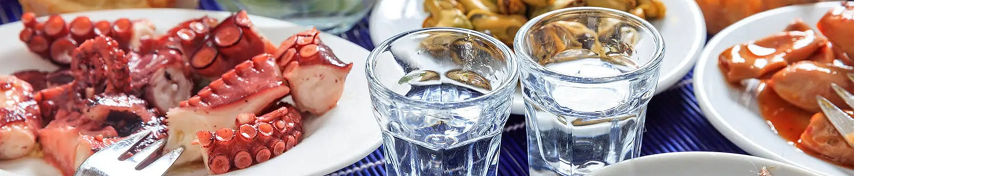
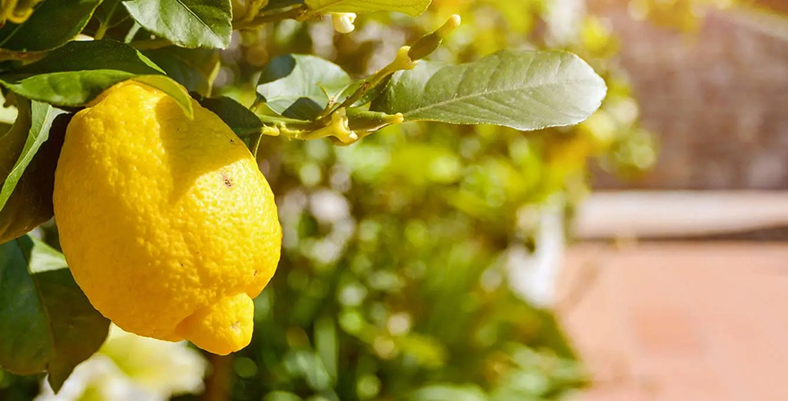

Gastronomygrocery
Traditional Cuisine
The Cuisine of Kozani
The cuisine of Skiathos
In the past fishermen exchanged the treasures of the sea for the farmers’ vegetables and oil. This bartering created a fragnant cuisine based on seafood and “horta” (wild greens); fish stew (dentex, white grouper, dusky grouper ank monkfish), fava (puree of yellow split peas) with sardines, “tsoflia” (as the locals call crayfish and lobster) with courgettes and "horta" from the mountains. Chard, sow thistle, chervil, innumerable wild greens are married magically with seafood, highlighting the aromas of the place.
You will find many varieties of fish and seafood in the rocky bays and small islets. The area around Lalaria, and around the islets, at Tsougrias or Kastro are spots that are considered ideal for fishing. Laid out in crates against the boats, pelagic fish for soups and grilling, bottom feeders for frying, squid, crayfish, prawns, lobster, cockles and mussels shimmer in the early light.
They are cooked in a variety of ways: we can enjoy squid with “horta” and onions, crayfish with courgettes and tomato, lobster with “horta”. Seafood is accompanied with vegetables and “horta”, with legumes and different sauces, each one special thanks to the herbs added, most frequently fennel which grows abundantly on the island. Green olives can also be marinated with fennel. Wild “horta” is also very tasty and goes well with seafood.
Traditional Products
Local Products of Grevena
Mountainous for the most part, the land of Grevena favours livestock breeding, which has, for many centuries, been the main occupation of its inhabitants, especially the Vlachs and the Kopatsaraioi, whose clans used to spend the summer in the pastures of Mt Pindos, and then descended to the plains of Thessaly in the winter. As a result, the area to this day has a great cheese tradition, with the production of delicious products, mainly made of goat's and sheep's milk. Many of these cheeses have Protected Designation of Origin (PDO) status.
Anevato PDO cheese stands out as it is produced exclusively in the area of Grevena and in the neighbouring province of Voio, Kozani, from local sheep’s and goat’s milk. It is a white, soft cheese, without shape or rind, with an almost creamy and grainy texture. It is found in all the tavernas of Grevena and it is characterized by its fresh, and appetizing sourish taste.
Batzos PDO cheese also hails from the dairy-making tradition of the local nomadic livestock breeders, who set up their makeshift cheese factories, the "batzaria", in the mountains of western and central Macedonia. It is a white semi-hard rindless brine cheese made from partially skimmed goat's and sheep's milk, with many small holes and a spicy, typically salty taste. It is ideal for grilling or frying.
Naturally, the list of Grevena dairy products would not be complete without feta (PDO), the most popular Greek cheese, as well as kaseri (PDO), which is very popular in northern Greece, and and it is manufactured mainly from sheep’s milk with the heated cheese mass technique. Other cheeses include kefalograviera (PDO), myzithra, anthotyro, soft and hard cheeses from local goat’s milk, butter and yogurt.
Adding fat-rich whey milk from batzo or kaseri (or from feta - although lower in fat) to full cream goat’s and sheep’s milk or cream creates the delicious, thick manouri (PDO) cheese. It is shaped like a cylindrical cane, and has a white, soft and compact mass without holes, a milky aroma, and a full, slightly salty flavour. It can be consumed on its own or used in cooking.
However, Grevena is, above all, known for its mushrooms. The local dense forests, as well as the riverside areas, host an incredible variety of species, whose number may even exceed 2,000. Obviously, not all are edible. Practically speaking, about 50 species are collected, and of these, 20 are picked in sufficient quantities for commercial purposes. In recent years, mushroom picking has been transformed into a kind of local sport which the welcoming townspeople are always willing to introduce to any newcomer. Discover the specialized shops in the centre of Grevena, that sell mushroom products and organize mushroom hunting excursions with experienced guides. The ideal seasons to pick mushrooms are autumn and spring, especially after rainy periods since this much-adored fungus needs moisture to grow.
Despite the relatively limited arable land, Grevena is also famous for its grains and mainly legumes. Petura noodles and trachanas, sweet and sour, are also produced, mainly by local women’s cooperatives.
Greek Wines
Greek Beverages
- 
-
Souma is a dodecanese alternative of ouzo or raki, which is going to amaze you! In Rhodes, it is mainly made from grape marc and wine, which makes the Rhodian Souma so special. You will find souma everywhere in restaurants, or even at cafes.
When adding water or ice in Souma, it turns white with water like Ouzo does. Remember to take it easy with Souma, as it is very strong; so make sure you eat while you drink! Souma is best served cold.
When visiting the island, you can visit a distillery, in order to see how souma is made. You can visit distilleries at the village of Sianna or Embonas, every end of September. The grapes are removed from the stem, pressed to extract their juice which is then boiled in large cauldrons and poured into barrels that are placed in a cool place.
- 
-
The Greek liqueur made of leaves.
Flourishing on the Cycladic island of Naxos, the citron tree produces citron leaves from which the exclusive Kitro liqueur is made. It is considered the driest and strongest of all Greek liqueurs with 36% vol.
Despite its high alcohol content, Kitro of Naxos is particularly sweet and aromatic, making it a favourite of even those who do not like strong distillates. It is a PDO product, produced in three main versions: white (strongest), green and yellow - making them very distinctive.
Kitro of Naxos is a particularly elegant and aromatic spirit drink. Once served, it displays delicate aromas of sweet citrus fruits on the nose that follow through to the palate. It is drunk in destillate glasses and not only aids digestion, but is particularly pleasant as well. Moreover, it is rather mild and friendly on the palate, which is why it is preferred even by those who avoid the strongest of distillates. It can be used in cocktails and long drinks.